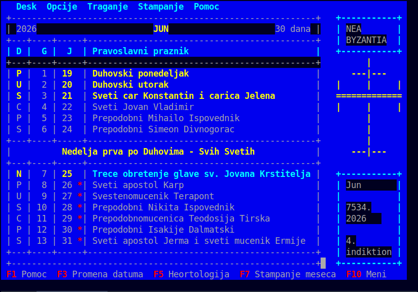
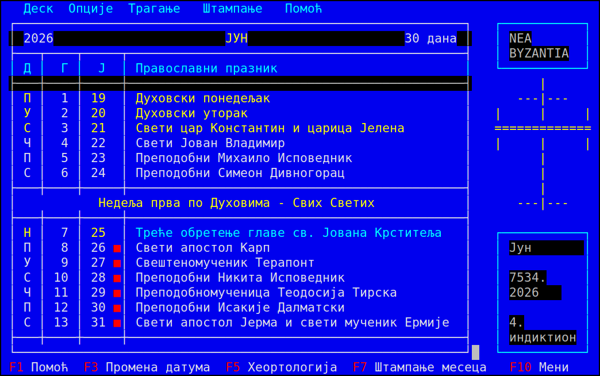

Пре · Сада / Before · Now
Version 1.0.0 is a ground-up presentation upgrade.
The UI was fully converted from ASCII Serbian Latin to
Serbian Cyrillic, the ASCII
+ - | art was replaced with proper
Unicode box-drawing borders, and a
UTF-8-safe raw-ANSI screen layer was added so multi-byte glyphs no
longer break the 80×25 layout.
+ - | borders
